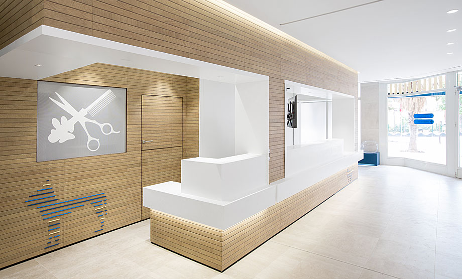
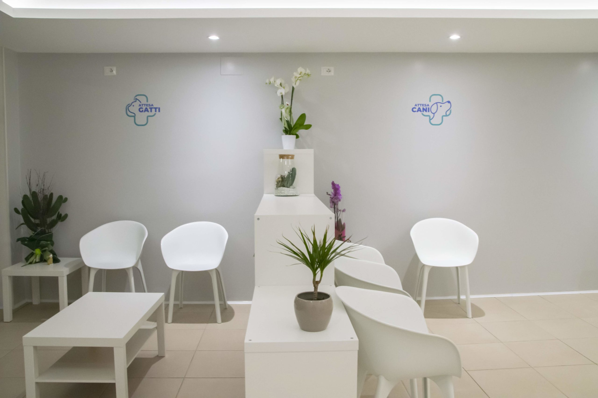

Sobre nós
Conheça mais sobre a nossa clínica veterinária

Desde 2013, somos apaixonados por cuidar de animais de estimação e promover o bem-estar deles. Nosso compromisso é proporcionar um atendimento de qualidade, carinhoso e especializado para todos aqueles que confiam em nós.
Contamos com uma equipe de profissionais altamente qualificados e experientes, formados por médicos veterinários, enfermeiros e técnicos, todos comprometidos em oferecer o melhor cuidado possível para os animais e proporcionar tranquilidade aos seus tutores.
Nossa clínica é equipada com tecnologia de ponta para diagnósticos precisos e tratamentos eficazes. Utilizamos equipamentos modernos para exames de imagem, laboratório completo para análises clínicas, além de salas de cirurgia equipadas para procedimentos cirúrgicos seguros.
Acreditamos que a prevenção é essencial para a saúde dos animais de estimação. Por isso, oferecemos programas de vacinação completos e exames de rotina para garantir que eles recebam os cuidados necessários em todas as fases da vida.
Nossa abordagem é sempre personalizada, reconhecendo que cada animal é único e merece tratamento individualizado. Acreditamos na importância da comunicação aberta com os tutores, para que juntos possamos tomar as melhores decisões em relação à saúde e ao bem-estar de seus queridos companheiros.
Não medimos esforços para garantir que cada visita seja uma experiência positiva para os animais e seus tutores. Nossa equipe está pronta para recebê-los com carinho, compaixão e profissionalismo.
Estamos ansiosos para cuidar do seu animal de estimação com todo o amor e dedicação que eles merecem.
Sua confiança é a nossa motivação diária para oferecer o melhor atendimento veterinário. Contate-nos hoje mesmo para agendar uma consulta ou tirar qualquer dúvida. Estamos aqui para ajudar!
Nosso compromisso é oferecer um atendimento excepcional, carinhoso e profissional a todos os peludos e seus tutores da nossa querida cidade de Muriaé.
Contamos com uma equipe de médicos veterinários experientes e especializados, além de instalações modernas para uma variedade de serviços, desde consultas de rotina até procedimentos cirúrgicos.